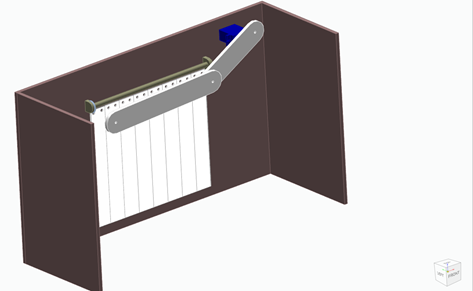
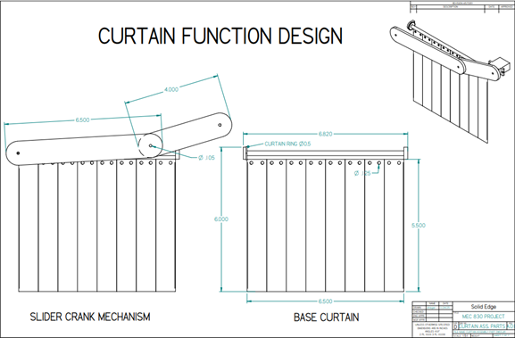
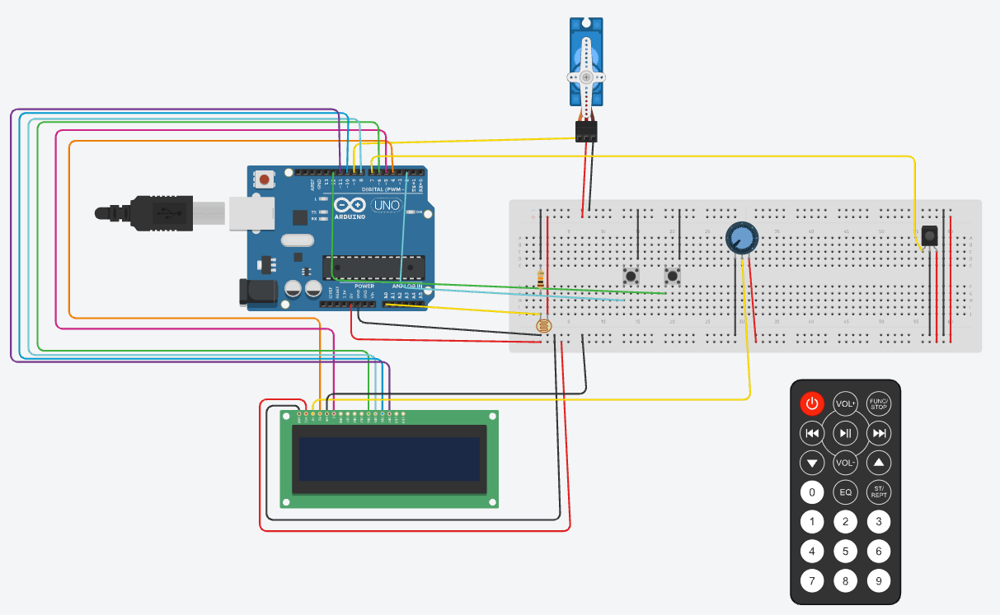
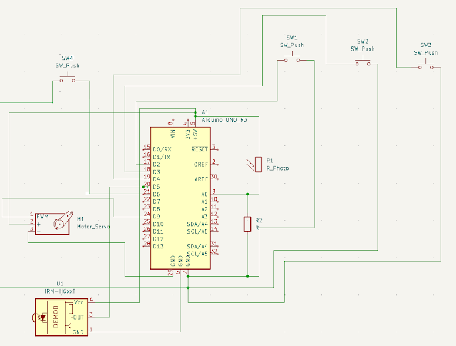

Electrical & controls
Smart curtain: light-controlled window automation
A window curtain that runs itself. A light sensor tells an Arduino how bright it is outside, and a servo-driven slider-crank opens the curtain fully, halfway or closes it, with push-button and remote modes that override the automation.

The brief
Curtains are usually moved by hand, which means glare in the afternoon, a dark room in the morning, and no privacy or heat control at night unless someone remembers. The brief was to turn our Phase 1 control logic into a working hardware prototype: a low-cost curtain that opens in daylight and closes at night on its own, while still letting the user take over with a button or a remote. It had to be built from an Arduino Uno kit and inexpensive materials, and work consistently.
My role
- Proposed one of the team’s four design concepts: photoresistor sensing, push-button control, a slider design and a popsicle-stick curtain rod, the combination the final prototype was built on
- Built the Tinkercad simulation of the circuit used to test the control logic
- Worked with the team on mechanism selection, testing and the final report
How we designed it
1. Compare four concepts
Each of us proposed a full concept and we compared them in a morphological chart. All four used an Arduino Uno, a servo and an IR remote. Three sensed light with a photoresistor (one used an ultrasonic distance sensor), three used push buttons for manual control (one used a potentiometer), and three moved the curtain with a slider rather than rolling it up.
2. Prototype the mechanism three ways
We built small versions of three mechanisms: a shaft that rolls the curtain up, a string pulley, and a slider-crank. The roll-up shaft and the pulley didn’t open and close the curtain consistently enough, so we chose the slider-crank for its simplicity, ease of building and, above all, repeatability.
3. Size the linkage
The servo arm drives a 4 in crank link, which is pinned to a 6.5 in slider link clipped to the curtain rings on the rod. We settled the lengths through calculation and trial and error, so the servo’s 0 to 180° swing maps onto the full curtain width:
| Servo angle | Slider reach | Curtain |
|---|---|---|
| 0° | 6.5 in (fully extended) | Closed |
| 90° | Partway | Half open |
| 180° | 0 in (links overlap) | Fully open |

Simulated first in Tinkercad
Before building anything, we tested the whole control system in a Tinkercad circuit simulation I put together: Arduino Uno, photoresistor, micro servo, push buttons, an IR receiver with its remote, and a 16×2 LCD that shows the current mode.

| Signal | Arduino pin |
|---|---|
| Photoresistor (light level) | A0 |
| Servo | D9 |
| Open and close buttons | D2 and D12, internal pull-ups |
| IR receiver | D7 |
| LCD (RS, E, D4 to D7) | D4, D5, D6, D8, D10, D11 |
- Automatic mode with hysteresis. The curtain opens above 700 and closes below 300, and holds its state in between, so light hovering around one level can’t make it flutter.
- A real IR remote. Remote buttons map to open, close, toggle and a noise test.
- A noise test. Typing
NOISEin the Serial Monitor adds ±50 of random noise to the light reading, to check the thresholds stay stable with a jittery sensor. - Serial commands and a status screen.
AUTO,MANUALandWIRELESSswitch modes, and the LCD shows the mode and whether noise is on.
The hardware prototype then added a half-open position, smooth servo motion and a dedicated mode button. Both versions of the code are on GitHub.
The design
Electronics
- Light sensing. A photoresistor in a voltage divider feeds analog pin A0, read as 0 to 1023. It’s the only analog signal, which keeps noise low.
- Four push buttons for open, close, half-open and mode select on D2, D3, D6 and D4, using the Arduino’s internal pull-ups with debouncing in software, so no extra resistors.
- Remote input on D5, with an IR receiver module wired to 5 V, ground and one digital pin.
- Servo on PWM pin D9. Everything runs from the Arduino’s 5 V USB supply, with short wiring and a schematic laid out so it could move to a PCB.

Control logic
The Arduino runs a three-mode state machine. The mode button cycles through them, and each mode decides the servo’s target angle:
| Mode | How it decides |
|---|---|
| Automatic | Above 700: fully open. 500 to 700: half open. Below 300: closed. Between 300 and 500 the curtain holds its last position. |
| Manual | The open, half and close buttons set the position directly, ignoring the light level. |
| Remote | Each press of the remote button cycles closed, half open, fully open. Serial commands (O, H, C, T, S) open, half-open, close, cycle or print a status report. |
The servo never jumps straight to its target. It moves 2° at a time with a 15 ms pause, so a full open or close takes a couple of seconds, which is smoother to watch and easier on the motor and the cardboard linkage. In automatic mode the controller also reports the light level, curtain state and servo angle every second for testing.
Build
The prototype frame, crank and slider links are cardboard, the rod is popsicle sticks and the curtain rings are zip ties. A front panel covers the mechanism so only the curtain is visible, the way it would look on a real window.
Results and what we’d change
In testing, the curtain moved smoothly between all three positions, followed the light thresholds in automatic mode, and responded to the buttons and remote commands in the other two modes.
- Bring the IR remote to the hardware. On the prototype, a push button and serial commands stood in for the remote. The IR receiver code already works in the Tinkercad version and can be carried over.
- Cardboard is a prototype material. 3D-printed links and frame would last longer and hold tolerances better.
- Thresholds need real-world tuning. The 300, 500 and 700 levels were set on the bench, and should be adjusted against actual window light.
- Show the mode. LED indicators for the current mode would help users.
Conclusion
The smart curtain brings sensing, actuation and control together in one small, cheap system: a photoresistor and Arduino decide, a servo and slider-crank act, and three modes keep a person in charge when they want to be. Choosing the mechanism by prototyping three options, rather than on paper, is what made it repeatable.
The code for both versions is on GitHub with the full write-up. Email me if you’d like to know more.
Back to all projects